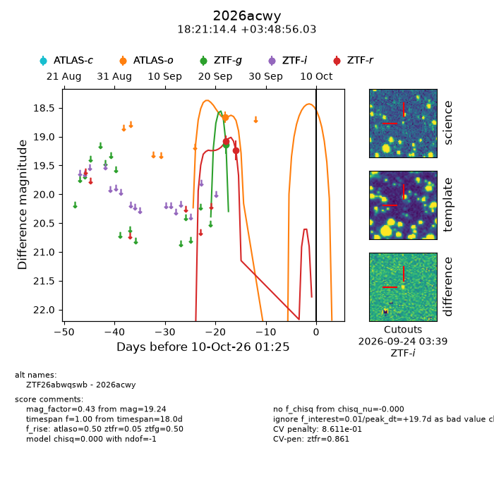
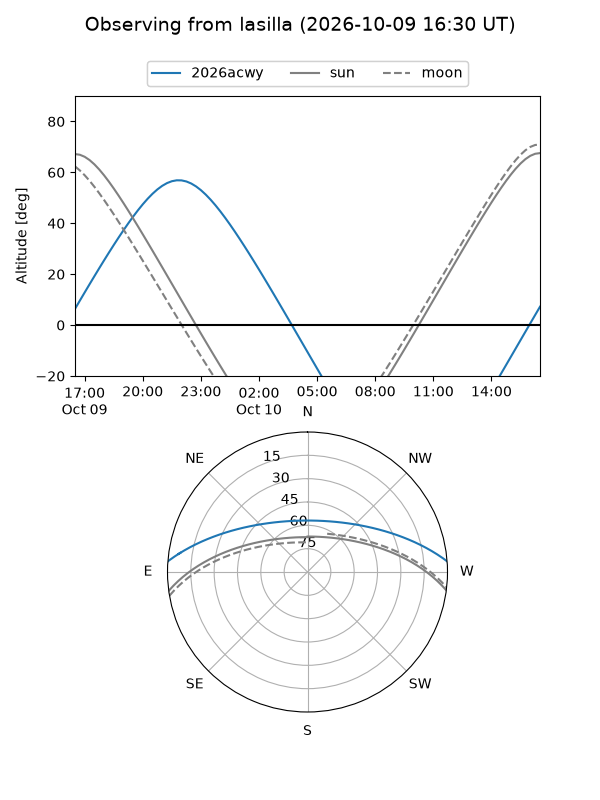
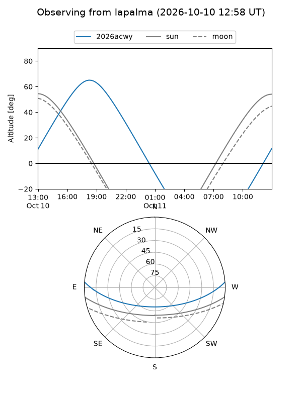
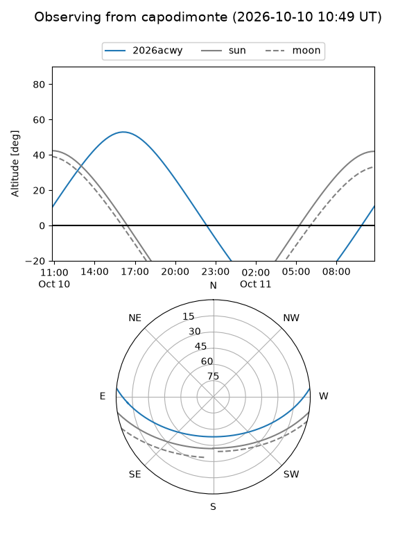
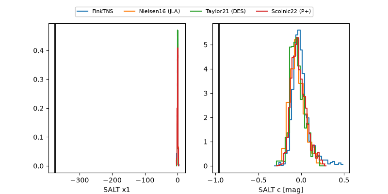

2026acwy
Target 2026acwy at 2026-10-10 13:26
Aliases and brokers:
FINK-ZTF: ztf.fink-portal.org/ZTF26abwqswb
Lasair-ZTF: lasair-ztf.lsst.ac.uk/objects/ZTF26abwqswb
ALeRCE-ZTF: alerce.online/object/ZTF26abwqswb
YSE-PZ: ziggy.ucolick.org/yse/transient_detail/2026acwy
TNS name: wis-tns.org/object/2026acwy
Direct TNS query: direct search
alt names
ZTF26abwqswb (ztf,fink_ztf)
2026acwy (tns,yse)
Coordinates:
equatorial (ra, dec) = 275.3101,+3.81556
equatorial (HMS+DMS) = 18:21:14.41,+03:48:56.03
galactic (l, b) = (32.9000,+8.45381)
Flags:
peak dt: +20.2
likely cv: !!
CV pen: 0.8611068629197153
Photometry:
last atlaso=18.67, ztfg=19.14, ztfr=19.24
1 atlaso, 1 ztfg, 2 ztfr detections
Lightcurve

Visibility



Additional plots
